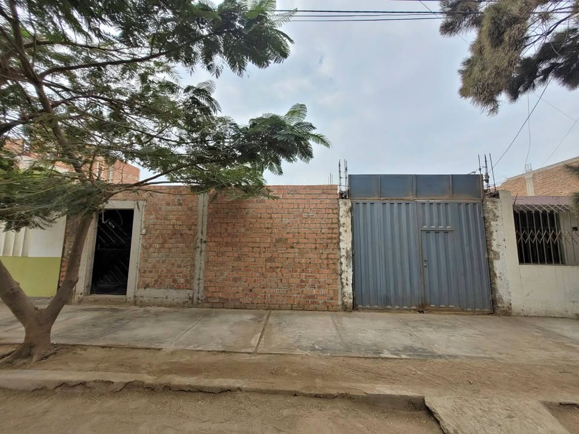

PEN150 2 ha

🌟 *OPORTUNIDAD DE INVERSIÓN Y VIVIENDA EN MOCHE PUEBLO* 🌟 Ubicado estratégicamente en Elías Aguirre, Moche Pueblo. Este predio combina una ubicación privilegiada con potencial de edificación a medida. Ideal tanto para un proyecto residencial familiar como para inversión inmobiliaria de alta rentabilidad. 📐 CARACTERÍSTICAS PRINCIPALES DE LA PROPIEDAD • Área de Terreno: 250 m² con distribución regular y excelente aprovechamiento del espacio. • Linderos / Medidas: 10 metros de frente x 25 metros de fondo. • Seguridad y Cerramiento: Completamente cercado con muro perimétrico. • Estado de Constr